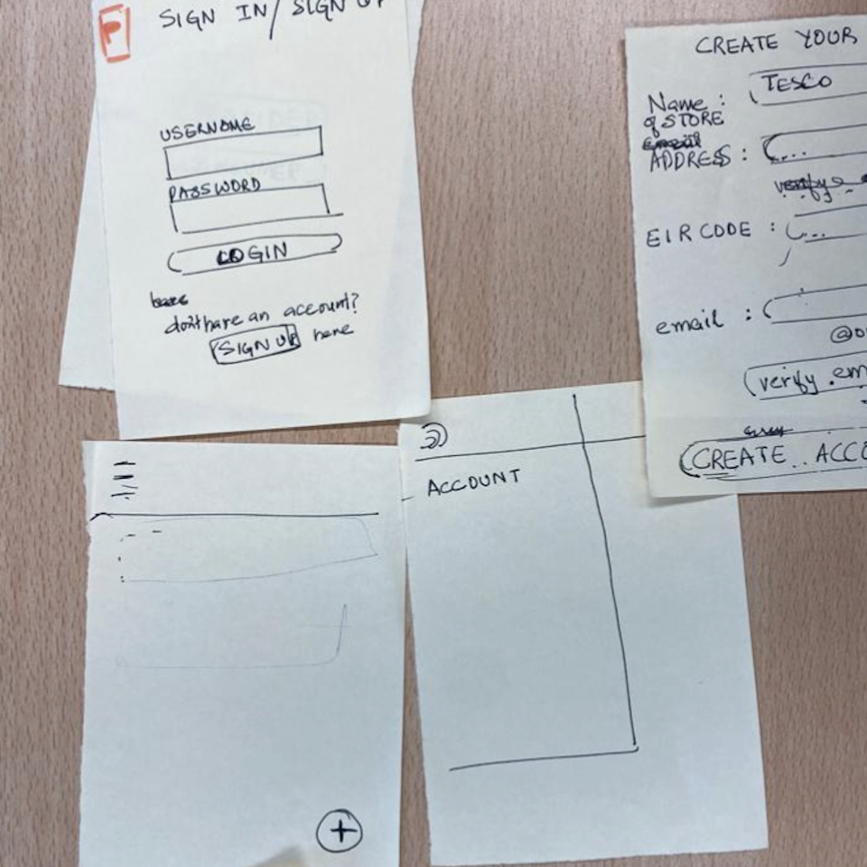
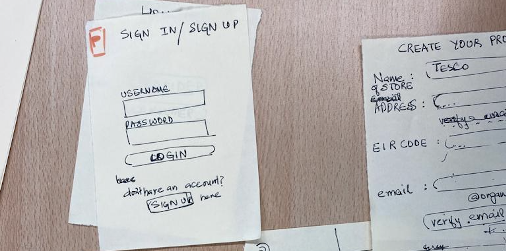
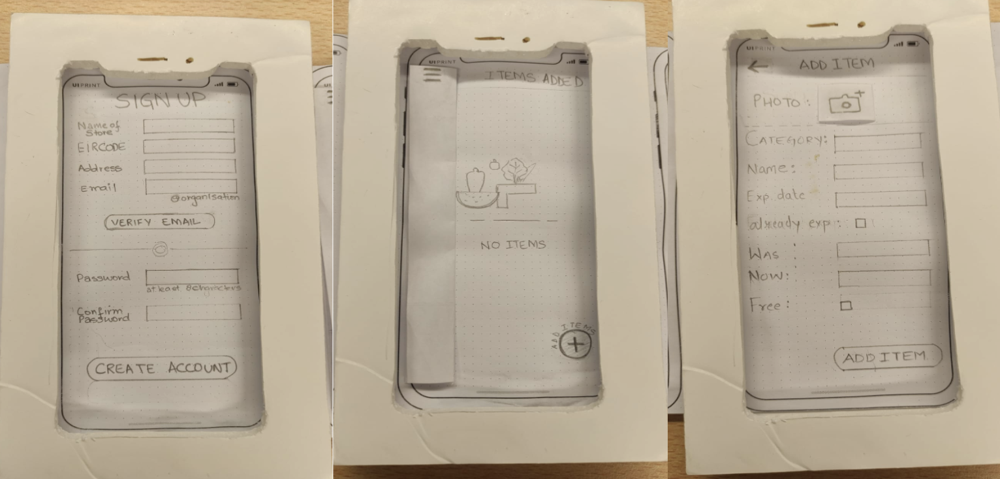

Interactive Media Design
For the Foundations of Interactive Media Design module, me and my group desided to develop the prototype of an app. The app would be used by stores and supermakets that wish to share foods that are in promotion or free because they are going out off date soon or they are alredy expired.
Before coming up with the idea we choose, the group got together to brainstorm some problems and them think about solution.We thought about student life, parenting, homeless people and other things.
After brainstorming the group evaluated the ideas and decided to create an app that would help to reduce the food waste. We delived a low fidelity prototype that we creatred using paper and pen.
There is 2 types of users for the app: Supermarkets, that are going to share what is available, and people that are going to use the app to find free or food with discount.
The next picture shows the screans that the people are going to see when looking for food:
And here are a few screans that the supermakets will have acess to:
As second part of this assignment, we are going to evaluate the testes we made with users and continue the development and improvement of the app
We learned about work as part of a team, brainstorming, time management and low fidelity prototype.